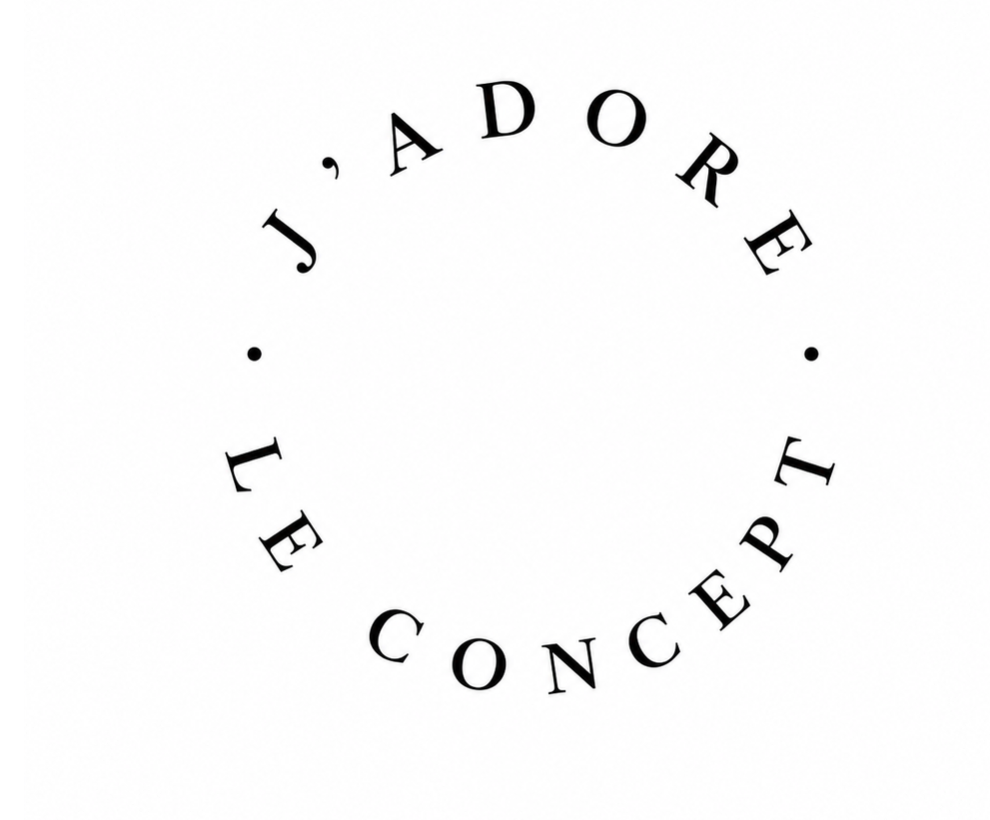

A curated perspective on fashion & luxury.
From why heritage still sells to how luxury is no longer just about objects — analytical essays on the forces shaping the industry.
Read the Essays →From Dolce & Gabbana in Milan to the Venetian Carnival — fashion as living spectacle.
View Photography →